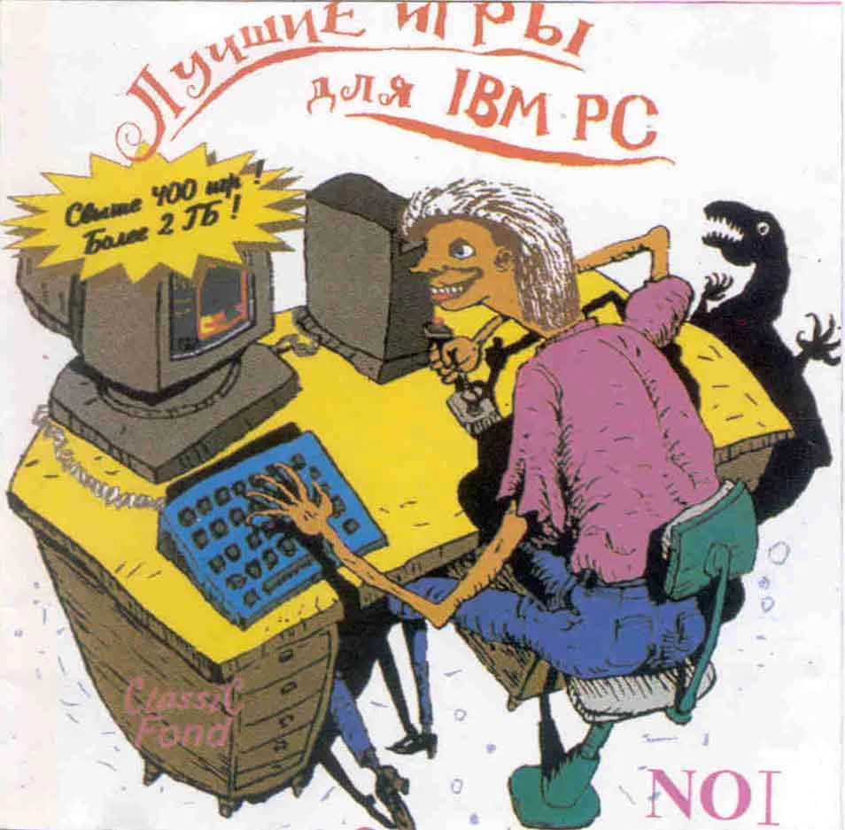

Classic Fond №1
— «Лучшие игры для IBM PC», CD 1995
Ностальгическая оболочка для первой дисковой коллекции игр РФ.
Используются материалы
old-games.ru
и
retroindex.github.io
. Сделано с любовью by
Ein
.
Сорт.: название
год
фирма
жанр
размер
архив
оценка
любимые
пресса
▲
Папки
Фильтры
Жанр:
Требует:
Мои:
Год
–
Размер, МБ ≤
Сброс
Название
Фирма
Год
Жанр
Описание
Распак.
Архив
★ ♥ Old-Games
Железо
◄
►
■
Закрыть